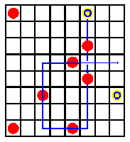

Kétszemélyes játék
A dámajáték világszerte ismert változatai közül az egyik legérdekesebb és legegzotikusabb a török dámajáték.Ehhez olyan táblát használnak, amely 64 azonos színű mezőből áll (nem hagyományos fekete-fehér beosztású). A bábuk menetmódja is más, mint a többi dámajáték-változatban, ami lényegesen megváltoztatja a lejátszás módját és taktikáját. Forrás: Zdzislaaw Nowak: A malomtól a góig.
{kind=link}
- Mindkét játékosnak tizenhat bábuja van, amelyeket két-két sorban kell felállítani, de úgy, hogy a tábla két legszélső sora üresen maradjon. A játék célja egyébként ugyanaz, mint a többi dámajátéké: az ellenfél bábuinak kiütése vagy beszorítása.
- A török dámajátékban nem szabad átlósan lépni, csak előre vagy oldalirányban. Az ütésre a nemzetközi dámajáték szabályai érvényesek, azzal a különbséggel, hogy ütni is csak vízszintesen vagy függőlegesen szabad.
- A tábla utolsó sorában a bábuk vezírré változnak. (Ugyanolyan kiváltságai vannak, mint a nemzetközi dámajátékban a dámának. A vezír egy lehetséges lépését az ábra mutatja.)
- Az nyer, aki az ellenfél összes bábuját kiüti, illetve mozgásképtelenné teszi, vagy akinek maradt még egy vezíre, miközben az ellenfelének már csak egyetlen közönséges bábuja van.
Az úgynevezett nagy török dámajátékot ugyanilyen szabályokkal játszhatjuk 100 mezős táblán, 30–30 bábuval.

|
 |